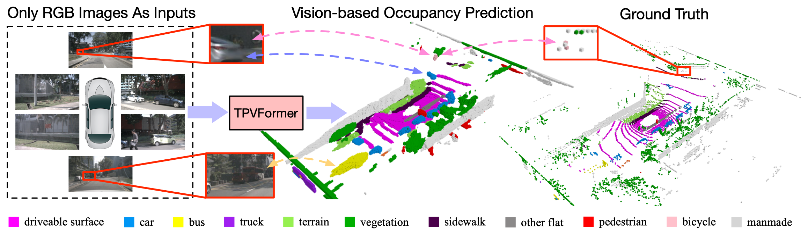
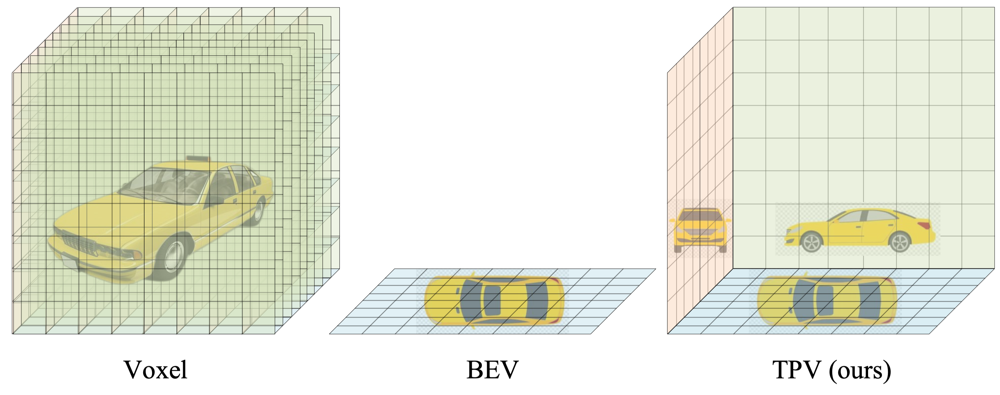
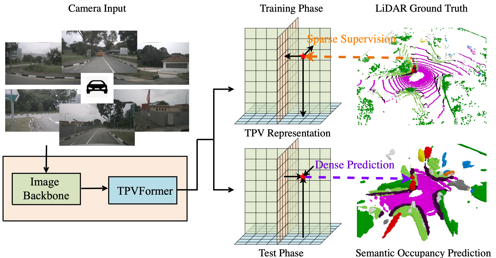
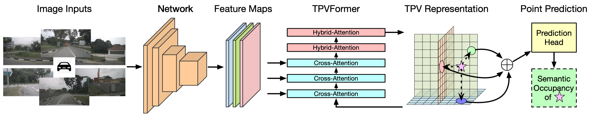
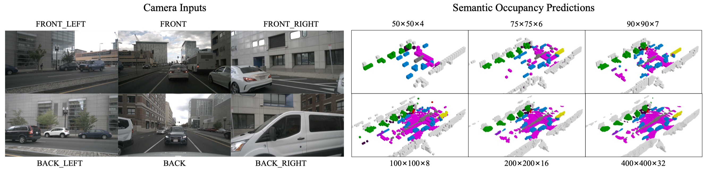
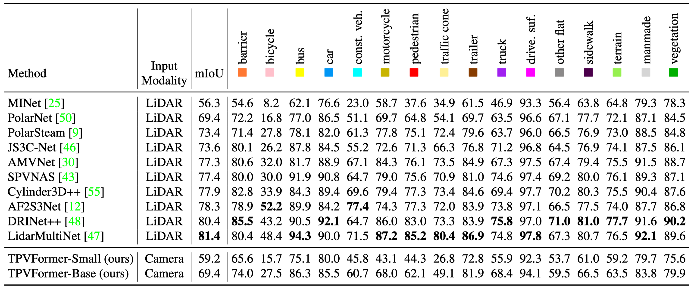
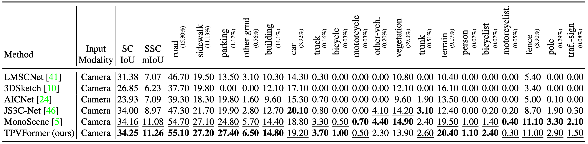

Overview of our contributions. Given only surround-camera RGB images as inputs, our model (trained using only sparse LiDAR point supervision) can predict the semantic occupancy for all volumes in the 3D space. This task is challenging as it requires both geometric and semantic understandings of the 3D scene. We observe that our model can produce even more comprehensive and consistent volume occupancy than the groundtruth on the validation set (not seen during training) of nuScenes. Despite the lack of geometric inputs like LiDAR, our model can accurately identify the 3D positions and sizes of close and distant objects. Particularly, our model even successfully identifies the partially occluded bicycle captured only by two LiDAR points, demonstrating the potential advantage of vision-based 3D semantic occupancy prediction.
Tri-Perspective View (TPV)
Modern methods for vision-centric autonomous driving perception widely adopt the bird's-eye-view (BEV) representation to describe a 3D scene. Despite its better efficiency than voxel representation, it has difficulty describing the fine-grained 3D structure of a scene with a single plane. To address this, we propose a tri-perspective view (TPV) representation which accompanies BEV with two additional perpendicular planes.

TPV models each point in the 3D space by summing its projected features on the three planes.
TPVFormer
To lift image features to the 3D TPV space, we further propose a transformer-based TPV encoder (TPVFormer) to obtain the TPV features effectively. Taking camera images as inputs, the proposed TPVFormer only uses sparse LiDAR semantic labels for training but can effectively predict the semantic occupancy for all voxels.

We employ an image backbone network to extract multi-scale features for multi-camera images. We then perform cross-attention to adaptively lift 2D features to the TPV space and use cross-view hybrid attention to enable the interactions between TPV planes. To predict the semantic occupancy of a point in the 3D space, we apply a lightweight prediction head on the sum of projected features on the three TPV planes.
Results
We perform three tasks: 3D semantic occupancy prediction, LiDAR segmentation, and semantic scene completion (SSC). For all tasks, our model only uses RGB images as inputs.
3D Semantic Occupancy Prediction
As dense semantic labels are difficult to obtain, we formulate a practical yet challenging task for vision-based 3D semantic occupancy prediction. Under this task, the model is only trained using sparse semantic labels (LiDAR points) but is required to produce a semantic occupancy for all the voxels in the concerned 3D space during testing. Our method is the first to demonstrate effective results on this challenging task.

Given the simplicity of our segmentation head, we can adjust the resolution of TPV planes at test time arbitrarily without retraining the network.

Arbitrary resolution at test time. We can adjust the prediction resolution through interpolation at test time. As resolution increases, more details about the 3D objects are captured.

LiDAR Segmentation

LiDAR segmentation results on nuScenes test set. Despite critical modal difference, our TPVFormer-Base achieves comparable performance with LiDAR-based methods. This is nontrivial since our method needs to reconstruct the complete 3D scene at a high resolution from only 2D image input, while the 3D structural information is readily available in the point clouds for LiDAR-based methods.
Official camera-only LiDAR segmentation leaderboard on nuScenes. We are the first to demonstrate the potential of vision-based methods on LiDAR segmentation.
Semantic Scene Completion

Semantic scene completion results on SemanticKITTI test set. TPVFormer outperforms all other methods in both IoU and mIoU, which demonstrates the effectiveness of TPVFormer in occupancy and semantics prediction.
Bibtex
@article{huang2023tri,
title={Tri-Perspective View for Vision-Based 3D Semantic Occupancy Prediction},
author={Huang, Yuanhui and Zheng, Wenzhao and Zhang, Yunpeng and Zhou, Jie and Lu, Jiwen},
journal={arXiv preprint arXiv:2302.07817},
year={2023}
}